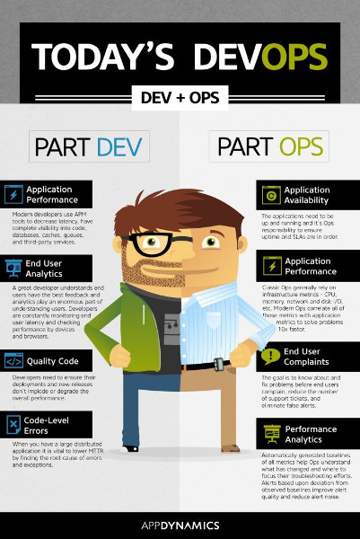
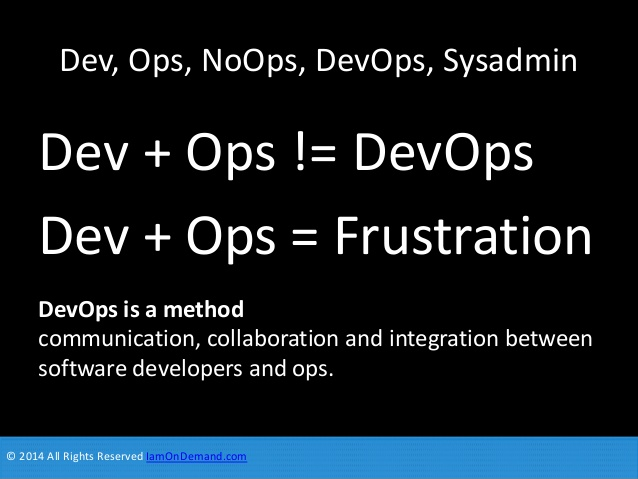
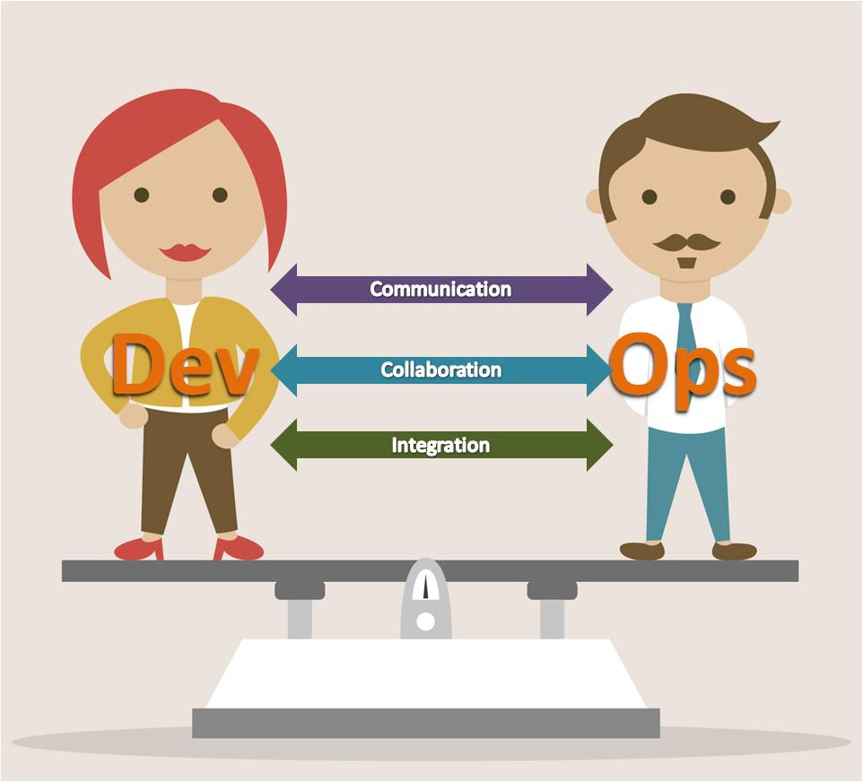
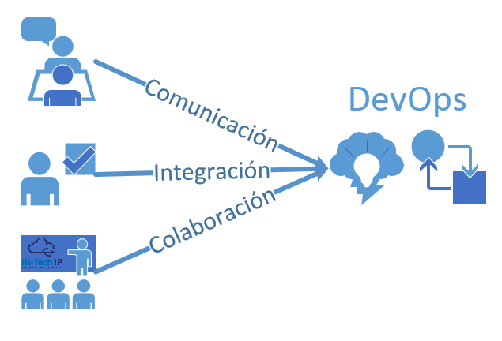
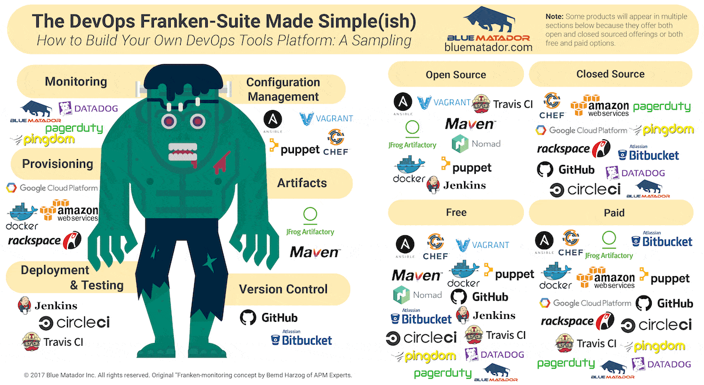

Qué es un Devops
Patricio Martínez
Created: 2018-06-20 mié 16:20
Introducción
Ahora tomemos un descanso de unos días.
Esta charla viene de cuando nos reuniamos en la universidad por la tarde para tomar un café y hablar sobre conceptos, herramientas, ideas, etc.
Café con Patricio
Así que relajémonos y tomemos un café juntos mientras charlamos
Qué es un Devops
DevOps es un término relativamente nuevo para describir lo que también ha sido llamado como “administración ágil de sistemas” y también el trabajo y colaboración en conjunto de los equipos de operaciones y de desarrollo.
Puedes pensar en DevOps como la participación efectiva de los administradores de sistemas en el proceso de desarrollo de aplicaciones, utilizando las mismas técnicas ágiles que usan los desarrolladores.
DevOps significa un montón de cosas diferentes para diferentes personas porque el “desarrollo ágil” en si mismo cubre un terreno bastante amplio.
Algunas personas dirán que DevOps es “ la colaboración de los departamentos de desarrollo y operaciones ”, o que es “ tratar tu código como infraestructura ”, o “ usar automatización ”. similares que se relacionan de una u otra forma.

Pero lo principal es saber que Devops no es un puesto es un método o cultura

Puntos resumen sobre qué es DevOps
Los grandes puntos u objetivos que persigue la metodología de trabajo DevOps podría resumirse en los siguientes puntos:
- Tiene como objetivo en cerrar una brecha entre el personal de operaciones y desarrollo mediante la mejorar de la comunicación, la colaboración y la integración.
- Mejorar y optimización de los procesos de puesta en marcha de un software.
- Permitir una mayor agilidad y excelencia operativa para responder a una exigencia en la calidad y la rapidez de entrega.
- Simplificar los procesos de despliegue de software e implementación sin renunciar a la efectividad y competitividad de una empresa.

Algunas de sus fases de su trabajo:
- Integración continua
- Continuo desarrollo
- Desarrollo Ágil
- Documentación y Comunicación

Prácticas Devops
- Principios DevOps Como debemos pensar diferentes sobre operaciones. Ejemplos incluyen la colaboración entre administradores y desarrolladores, “infraestructura como código”, etc.
- Métodos DevOps Procesos que se usan para realizar operaciones ágiles, como iteraciones, lean/kanban, reuniones de 5 minutos, etc.
- Prácticas DevOps Técnicas y herramientas específicas usadas como parte de la implementación de los procesos, como herramientas de automatización (Puppet, Cheft), continuous deployment, sistemas de monitoreo (Nagios, Zabbix), y cualquier aplicación que tengas en tu “caja de herramientas”.
Las herramientas del Devops

La documentación es muy importante

Posibles problemas por no tener una documentación adecuada
El trabajo del administrador se hace tedioso y confuso
Dificulta la resolución de problemas
– Que siempre ocurren los viernes por la tarde

Dificulta el trabajo a otras personas que vengan nuevas
Problemas con la gestión de claves y permisos
Qué se gana con la cultura Devops
"Los equipos que practican DevOps despliegan 30 veces más frecuentemente, fallan 60 veces menos y se recuperan 160 veces más rápido. "
— Informe del estado de DevOps en 2016 de Puppet Labs
Cuanto cobra un Devops
Esto es difícil de decir ya que es un rol nuevo y no siempre se valora. En todo caso como en cualquier trabajo lo mejor es ir a empresas que tengan claro lo que es un desarrollo ágil y tengan filosofía devops.
En todo caso según esta página la media en España está sobre los 40.000 euros brutos anuales.
- 42.000 en Madrid
- 44.000 en Barcelona
- 36.000 en Valencia
Además lo bueno es que muchas empresas admiten el trabajo online con lo que podemos acceder a ofertas de otros países.